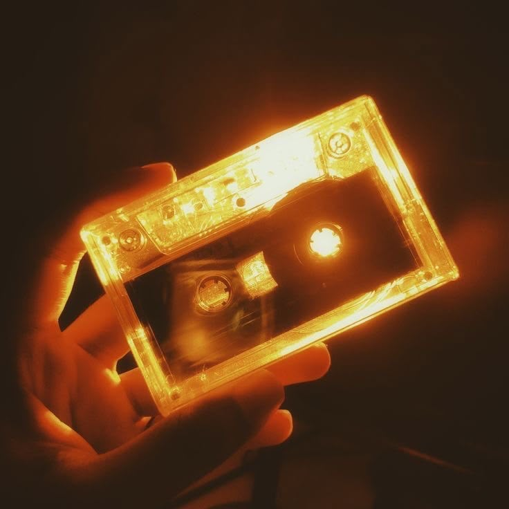

A fictional artist experience
NURU NOIRAFTERLIGHT
Songs for the hour when water turns black and every reflection becomes gold.
Enter the record↘Three releases. One reflected world.
Press the record.
Open the archive.
The disc is the navigation.
Album 01
Afterlight
A six-track visual release shaped by low voices, slow percussion and gold moving across black water.
- Form
- Visual album and web experience
- Featured piece
- Gold on Water
Fictional music concept created as a design study.
Light can be recorded.
The archive imagines each song as a physical object: warm plastic, magnetic tape and reflections that refuse to stay still.

Nuru Noir is a fictional music identity created to explore art direction, responsive editorial design and motion on the web.
Return to Daniel’s portfolio↗